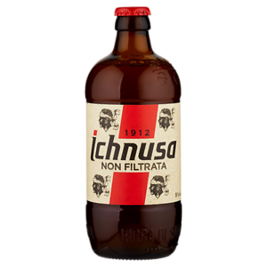
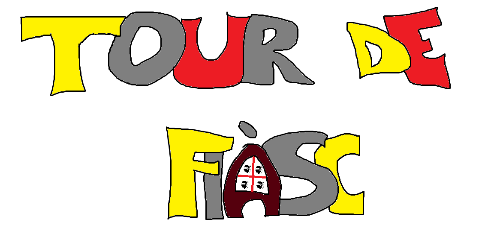

Novità 2018: la coppa Fiasco


Il Tour De Fiàsc è la più grande competizione ciclistica di Bergamo, tanto che viene soprannominata il "Quarto Giro", in quanto viene ritenuta inferiore a livello mondiale solo a Tour de France, Giro d' Italia e Vuelta de Espana. Nel 2018 si svolgerà la terza edizione, la quale sarà rivisitata su più tappe, per festeggiare i 7 anni della competizione. Le due competizioni precedenti sono state svolte nel 2011 e nel 2012.